전기철도산업기사 (2003-08-10 기출문제)
1과목: 전기자기학
1. 전위함수 V=2xy2+x2yz2[V]일 때 점(1, 0, 0)[m]의 공간 전하밀도는 몇 C/m3 인가?
- -2εo
- -4εo
- -6εo
- -8εo
(정답률: 알수없음)
2. 평등자계내에 수직으로 돌입한 전자의 궤적은?
- 원운동을 하는데 반지름은 자계의 세기에 비례한다.
- 구면위에서 회전하고 반지름은 자계의 세기에 비례한다.
- 원운동을 하고 반지름은 전자의 처음 속도에 반비례한다.
- 원운동을 하고 반지름은 자계의 세기에 반비례한다.
(정답률: 알수없음)

3. 콘덴서에 비유전율 εr인 유전체로 채워져 있을 때의 정전용량 C와 공기로 채워져 있을 때의 정전용량 Co와의 비 C/Co는?
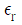
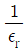
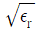
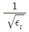
(정답률: 알수없음)
4. 진공 중에서 4π[Wb]의 자하(磁荷)로 부터 발산되는 총 자력선의 수는?
- 4π
- 107
- 4π×107
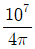
(정답률: 알수없음)
5. 전류에 의한 자계의 방향을 결정하는 법칙은?
- 렌즈의 법칙
- 플레밍의 오른손법칙
- 플레밍의 왼손법칙
- 암페어의 오른손법칙
(정답률: 알수없음)
6. 정전용량 5μF인 콘덴서를 200V로 충전하여 자기인덕턴스 20mH, 저항 0 인 코일을 통해 방전할 때 생기는 전기진동 주파수 f[Hz]와 코일에 축적되는 에너지 W는 몇 Ｊ 인가?
- f=500, W=0.1
- f=50, W=1
- f=500, W=1
- f=5000, W=0.1
(정답률: 알수없음)
7. 단면적 S[m2], 자로의 길이 ℓ [m],투자율 μ[H/m]의 환상 철심에 1m당 N회의 코일을 균등하게 감았을 때 자기인덕턴스는 몇 H 인가?
- μN2ℓ S
- μNℓ S
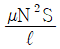
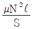
(정답률: 알수없음)
8. 자속밀도 B [Wb/m2]내에서 전류 Ｉ[A]가 흐르는 도선이 받는 힘 F [N]을 옳게 표현한 것은?
- F =ＩdL × B
- F =ＩdL · B
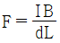
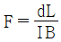
(정답률: 알수없음)
9. 1권의 코일에 5Wb의 자속이 쇄교하고 있을 때 t=1/100초 사이에 이 자속을 0 으로 했다면 이때 코일에 유도되는 기전력은 몇 V 이겠는가?
- 100
- 200
- 250
- 700
(정답률: 알수없음)
10. 무한장 원주형 도체에 전류 Ｉ가 표면에만 흐른다면 원주 내부의 자계의 세기는 몇 AT/m 인가? (단, r[m]는 원주의 반지름이고, N은 권선수이다.)
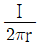
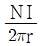
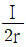
- 0
(정답률: 알수없음)
11. 두 종류의 금속으로 된 회로에 전류를 통하면 각 접속점에서 열의 흡수 또는 발생이 일어나는 것을 무슨 효과라 하는가?
- Thomson효과
- Seebeck효과
- Volta효과
- Peltier효과
(정답률: 알수없음)
12. 거리 r에 반비례하는 전계의 세기를 나타내는 대전체는?
- 점전하
- 구전하
- 전기쌍극자
- 선전하
(정답률: 알수없음)
13. 원점에 점전하 Q[C]이 있을 때 원점을 제외한 모든 점에서 ∇·D 의 값은?
- ∞
- 0
- 1
- ε0
(정답률: 알수없음)
14. 무한장 직선도체에 선전하밀도 λ[C/m]의 전하가 분포되어 있는 경우 직선도체를 축으로 하는 반지름 r의 원통 면상의 전계는 몇 V/m 인가?
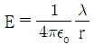
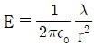
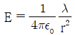
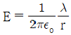
(정답률: 알수없음)
15. 100kW의 전력이 안테나에서 사방으로 균일하게 방사될 때 안테나에서 1km 의 거리에 있는 전계의 실효값은 몇 V/m 인가?
- 1.73
- 2.45
- 3.68
- 6.21
(정답률: 알수없음)
16. 공기콘덴서를 100V로 충전한 다음, 극간에 유전체를 넣어 용량을 10배로 하였다면 정전에너지는 몇 배로 되는가?
- 1/10
- 1/100
- 10
- 100
(정답률: 알수없음)
17. 그림과 같이 권수 1 이고 반지름 a[m]인 원형전류 Ｉ[A]가 만드는 중심의 자계의 세기는 몇 AT/m 인가?
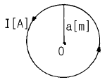
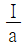
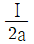
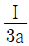
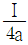
(정답률: 알수없음)
18. 면적 S[m2], 간격 d[m]인 평행판콘덴서에 그림과 같이 두께 d1, d2[m]이며 유전률 ε1, ε2[F/m]인 두 유전체를 극판간에 평행으로 채웠을 때 정전용량은 얼마인가?
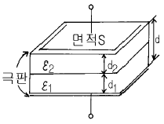
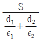
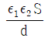
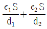
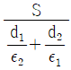
(정답률: 알수없음)
19. 진공 중에 서로 떨어져 있는 두 도체 A, B가 있을 때 도체 A에만 1C의 전하를 주었더니 도체 A와 B의 전위가 3V, 2V이었다. 지금 도체 A, B에 각각 2C과 1C의 전하를 주면 도체 A의 전위는 몇 V 인가?
- 6
- 7
- 8
- 9
(정답률: 알수없음)
20. 원점 주위의 전류밀도가
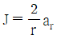
[A/m2]의 분포를 가질 때 반지름 5cm의 구면을 지나는 전 전류는 몇 A 인가?- 0.1π
- 0.2π
- 0.3π
- 0.4π
(정답률: 알수없음)
2과목: 전력공학
21. 송전계통에서 콘덴서와 리액터를 직렬로 연결하여 제거시키는 고조파는?
- 제3고조파
- 제5고조파
- 제7고조파
- 제9고조파
(정답률: 알수없음)
22. 단상2선식 배전선로에서 대지정전용량을 Cs, 선간정전용량을 Cm이라 할 때 작용정전용량은?
- Cs+Cm
- Cs+2Cm
- Cs+3Cm
- 2Cs+Cm
(정답률: 알수없음)
23. 뇌해방지와 관계가 없는 것은?
- 댐퍼
- 소호각
- 가공지선
- 매설지선
(정답률: 알수없음)
24. 충전된 콘덴서의 에너지에 의해 트립되는 방식으로 정류기, 콘덴서 등으로 구성되어 있는 차단기의 트립방식은?
- 콘덴서 트립방식
- 직류전압 트립방식
- 과전류 트립방식
- 부족전압 트립방식
(정답률: 알수없음)
25. 어떤 콘덴서 3개를 선간전압 3300V, 주파수 60Hz의 선로에 △로 접속하여 60kVA가 되도록 하려면 콘덴서 1개의 정전용량은 약 μF 인가?
- 0.5
- 5
- 50
- 500
(정답률: 알수없음)
26. 연간 전력량 E[kWh], 연간 최대전력 W[kW]인 경우의 연부하율은?
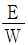
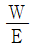
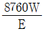
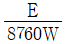
(정답률: 알수없음)
27. 고장점에서 구한 전 임피던스를 Z, 고장점의 성형전압을 E 라 하면 단락전류는?
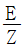
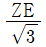
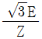
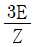
(정답률: 알수없음)
28. 송전선로의 안정도 향상 대책으로 틀린 것은?
- 고속도 재폐로방식을 채용한다.
- 계통의 직렬 리액턴스를 증가시킨다.
- 중간조상방식을 채용한다.
- 선로의 평행 회선수를 늘리거나 복도체 내지는 다도체 방식을 사용한다.
(정답률: 알수없음)
29. 피뢰기의 구조는?
- 특성요소와 콘덴서
- 특성요소와 소호리액터
- 소호리액터와 콘덴서
- 특성요소와 직렬갭
(정답률: 알수없음)
30. 저압 네트워크 배전방식의 장점이 아닌 것은?
- 전압강하가 적다.
- 인축의 접지사고가 거의 없다.
- 무정전공급의 신뢰도가 높다.
- 부하의 증가에 대한 적응성이 크다.
(정답률: 알수없음)
31. 우리나라에서 현재 사용되고 있는 송전전압에 해당되는 것은?
- 150kV
- 220kV
- 345kV
- 500kV
(정답률: 알수없음)
32. 화력 발전소에서 가장 큰 손실은 주로 어떤 손실인가?
- 연돌 배출가스 손실
- 복수기의 방열손
- 소내용 동력
- 터빈 및 발전기의 손실
(정답률: 알수없음)
33. 차단기의 개폐에 의한 이상전압은 송전선의 Y 전압의 몇 배 정도가 최고인가?
- 2
- 3
- 6
- 10
(정답률: 알수없음)
34. 다음의 감속재 중 감속비가 가장 큰 것은?
- 경수
- 중수
- 흑연
- 헬륨
(정답률: 알수없음)
35. 유효낙차 400m의 수력발전소에서 펠턴수차의 노즐에서 분출하는 물의 속도를 이론값의 0.95배로 한다면 물의 분출속도는 약 몇 m/s 인가?
- 42 .3
- 59.5
- 62.6
- 84.1
(정답률: 알수없음)
36. 배전전압을 √3 배로 하면 동일한 전력손실률로 보낼 수 있는 전력은 몇 배가 되는가?
- √3
- 3/2
- 3
- 2√3
(정답률: 알수없음)
37. 주상변압기에 시설하는 캐치홀더는 어느 부분에 직렬로 삽입하는가?
- 1차측 양 선
- 1차측 1선
- 2차측 비접지측 선
- 2차측 접지된 선
(정답률: 알수없음)
38. 3000kW, 역률 80%(뒤짐)의 부하에 전력을 공급하고 있는 변전소에 전력용콘덴서를 설치하여 변전소에서의 역률을 90%로 향상시키는 데 필요한 전력용콘덴서의 용량은 약 몇 kVA 인가?
- 600
- 700
- 800
- 900
(정답률: 알수없음)
39. 중성점 접지방식에서 직접 접지방식에 대한 설명으로 틀린 것은?
- 보호계전기의 동작이 확실하여 신뢰도가 높다.
- 변압기의 저감절연이 가능하다.
- 과도안정도가 대단히 높다.
- 단선고장시의 이상전압이 최저이다.
(정답률: 알수없음)
40. 중거리 송전선로의 T형 회로에서 송전단전류 Ｉs 는? (단, Z , Y 는 선로의 직렬임피던스와 병렬어드미턴스이고, Er 은 수전단전압, Ｉr 은 수전단전류이다.)
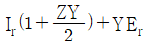
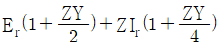
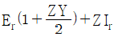
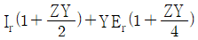
(정답률: 알수없음)
3과목: 전기철도공학
41. 전기차 형태에 의한 분류에서 경전철 형식이 아닌 것은?
- 모노레일 경량전철
- 고무차륜 경량전철
- LＩM형 경량전철
- 강색 경량전철
(정답률: 알수없음)
42. 전기철도의 급전회로의 특징이 아닌 것은?
- 광범위한 속도와 대출력이 요구된다.
- 변동하지 않는 부하에 급전하게 되며, 그 부하의 위치가 고정적이다.
- 고 신뢰도와 안전성이 요구된다.
- 고속 운전시에도 양호한 접촉이 요구된다.
(정답률: 알수없음)
43. 직류 급전 구분소의 역할이 아닌 것은?
- 전차선로의 전압강하를 경감시킨다.
- 고장 검출을 용이하게 한다.
- 사고 구간을 한정 구분한다.
- 선로의 절연강도가 높아진다.
(정답률: 알수없음)
44. 정류기와 급전용 변압기의 부담률을 나타내는 식은?
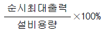
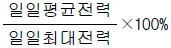
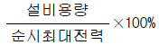
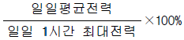
(정답률: 알수없음)
45. 전기철도에서 급전선의 인류장치를 설치하는 개소로 맞지 않는 것은?
- 역 구내
- 교량개소 등에서 이격조건이 어려운 개소
- 연속하는 구배의 정점 부근
- 지상구간에서 지하구간으로 급전선을 가선하는 경우
(정답률: 알수없음)
46. 교류 R-Bar방식의 강체 전차선로에서 한 섹션의 길이는 몇 m 를 기준으로 하는가?
- 100∼200
- 200∼400
- 400∼600
- 600∼800
(정답률: 알수없음)
47. 직류 1500V 전기철도방식에서 대지절연 표준 이격거리로 옳은 것은?
- 100mm
- 150mm
- 200mm
- 250mm
(정답률: 알수없음)
48. 가공 전차선로의 조가방식에서 다음 중 가장 단순한 구조는?
- 합성 콤파운드 커티너리 조가방식
- 헤비 심플 커티너리 조가방식
- 직접 조가방식
- 사조식
(정답률: 알수없음)
49. 직류 전차선로의 귀선로의 전기저항이 높아 전압강하 및 레일의 전위가 상승되는 것을 억제하기 위하여 설치하는 것은?
- 보조귀선
- 인입귀선
- 중성선
- 흡상선
(정답률: 알수없음)
50. BT 전철 변전소에서 양질의 전기를 유지하고 전압보상과 무효전력을 경감하기 위한 설비는?
- 흡상변압기
- 단권변압기
- 전력용콘덴서
- 정류기용 변압기
(정답률: 알수없음)
51. 시속 100km인 열차가 반지름 1000m의 곡선 궤도를 주행할 때 고도(cant)는 약 몇 mm 인가? (단, 궤간은 1435mm로 한다.)
- 104
- 107
- 110
- 113
(정답률: 알수없음)
52. 전차선로의 흡상선을 옳게 정의한 것은?
- 부급전선과 조가선을 접속하는 전선
- 부급전선과 귀선궤조를 접속하는 전선
- 급전선과 부급전선을 접속하는 전선
- 급전선과 중성선을 접속하는 전선
(정답률: 알수없음)
53. 염해 등의 공해지역과 강풍구간에 적합한 급전선의 선종은?
- 아연도강연선
- 경동연선
- 경알루미늄연선
- 강심알루미늄연선
(정답률: 알수없음)
54. 가공 전차선로에서 양단의 가고가 같고 전차선이 수평인 경우, 행거길이 L[m]를 구하는 식은? (단, H: 가고[m], T: 표준온도에서 조가선의 장력[㎏f], W: 합성 전차선의 단위중량[㎏/m], S: 경간[m], x: 경간 중앙에서 행거 위치까지의 거리[m] 이다.)
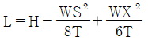
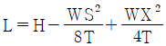
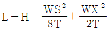
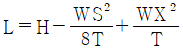
(정답률: 알수없음)
55. 교류 전차선로용 보안기의 지표상 설치 높이는 몇 m 이상이어야 하는가?
- 3
- 3.5
- 4
- 4.5
(정답률: 알수없음)
56. 귀선로를 설치할 때 요구되는 기본적인 조건으로 옳지 않은 것은?
- 대지 누설전류가 작아야 한다.
- 필요한 기계적 강도 및 내식성을 가져야 한다.
- 교·직류방식의 접속점에는 자기교란현상이 발생하도록 시설하여야 한다.
- 임피던스 본드 등에 단자 취부는 탈락이 없도록 시설하여야 한다.
(정답률: 알수없음)
57. 강체 전차선로의 구분장치 중 기계적 구분장치는?
- 에어섹션
- 익스팬션 죠인트
- 앵커링
- 알루미늄 T-BAR
(정답률: 알수없음)
58. 운전속도에 따라 달라지는 전차선로의 동적작용은 도플러계수에 의해 알 수 있다. 도플러계수 α는? (단, V: 운전속도[m/s], C: 파동전파속도[m/s]이다.)
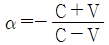
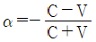
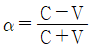
(정답률: 알수없음)
59. 전기철도에 이용되는 지중 매설 금속체의 방식(防蝕)방법이 아닌 것은?
- 무전양극식
- 외부전원식
- 직접배류식
- 선택배류식
(정답률: 알수없음)
60. 전차선로에서 전기적 구분장치가 아닌 것은?
- 에어섹숀
- 애자형섹숀
- 수지섹숀
- 에어죠인트
(정답률: 알수없음)
4과목: 전기철도구조물공학
61. 조합철구의 단면성능과 직접적인 관계가 없는 것은?
- 단면 2차 모멘트
- 단면 및 주재의 형상치수
- 단면계수
- 수평분포하중
(정답률: 알수없음)
62. 고정빔에 취부하여 급전선, 보호선 등을 지지하는 완금을 무엇이라 하는가?
- 주수평파이프
- 가젯플레이트
- 대용물
- 입속
(정답률: 알수없음)
63. 조합철주의 경사재 설치방법으로 옳지 않은 것은?
- 근개 400mm이상 조합철주는 경사재를 산형강으로 사용하며, 평강을 사용하는 경우는 복사경사재로 하고 교점은 볼트로 조인다.
- 경사재의 수평면에 대한 경사각도는 선로에 직각으로 복경사재인 경우는 45° 로 취부한다.
- 경사재의 수평면에 대한 경사각도는 선로에 직각으로 단경사재인 경우는 40° 로 취부한다.
- 경사재의 수평면에 대한 경사각도가 커지면 강도적으로 안정되므로 각도를 최대한 크게 하여 취부한다.
(정답률: 알수없음)
64. 단독 지지주의 설계하중을 계산할 때 작업원 1인당 중량은 보통 몇 kg 으로 계산하는가?
- 55
- 60
- 70
- 80
(정답률: 알수없음)
65. 한 변의 길이가 h인 정사각형 평면도형의 단면계수는?
(정답률: 알수없음)
66. 그림과 같은 세 힘의 0 점에 대한 모멘트의 합은 몇 kg.cm 인가?
- 120
- 150
- 180
- 210
(정답률: 알수없음)
67. 구조물에 대한 강도계산을 할 때 병종풍압하중에 적용하는 온도는?
- 최고온도
- 표준온도
- 평균온도
- 최저온도
(정답률: 알수없음)
68. 다음에서 외응력이 아닌 것은?
- 휨모멘트
- 전단력
- 열응력
- 축방향력
(정답률: 알수없음)
69. 다음과 같은 조건에서 완금의 최대 굽힘 모멘트는 약 몇 kgf.cm 인가? (단, 전선 및 금구류의 수직하중: 188kg, 완금재의 단위중량: 9.96kg/m이다.)
- 13712
- 14811
- 15824
- 19012
(정답률: 알수없음)
70. 인류주 등 차막이 후방에 건식하는 전주는 열차의 제동거리 미확보 등에 의하여 전차선에 중대한 영향을 미치지 않도록 하기 위해 몇 m이상 이격하여 건식하여야 하는가?
- 10
- 20
- 30
- 40
(정답률: 알수없음)
71. 직선 부재를 핀결합으로 삼각형이 연속된 형태로 조합된 구조를 무엇이라 하는가?
- 보(Beam)
- 라멘(Rahmen)
- 합성라멘(Composite rahmen)
- 트러스(Truss)
(정답률: 알수없음)
72. 교류 전기철도에서 부급전선에 사용되는 설비로서 흡상변압기의 단자 구분 개소에 사용하는 180mm 현수애자의 수는 일반적인 경우 몇 개를 사용하는가?
- 2
- 4
- 6
- 8
(정답률: 알수없음)
73. 힘의 단위로 1N은 몇 dyne 인가?
- 100
- 1000
- 10000
- 100000
(정답률: 알수없음)
74. 전기철도에서 사용하는 전선 등에 관한 설명으로 옳지 않은 것은?
- 부급전선, 보호선, 비절연보호선, 가공공동지선, 섬락보호지선은 전선에 포함하지 않는다.
- 전차선이란 전기차량의 집전장치에 습동 접촉하여 이에 전기를 공급하는 가공전선을 말한다.
- 합성 전차선이란 조가선(강체 포함), 전차선, 행거, 드러퍼 등으로 구성된 가공전선을 말한다.
- 가공 전차선로라 함은 합성 전차선과 이에 부속된 곡선당김장치, 장력조정장치, 흐름방지장치 등을 총괄한 것을 말한다.
(정답률: 알수없음)
75. 전철주와 조립하여 전차선과 급전선 등을 지지하기 위한 강 구조물은?
- 빔
- 하수강
- 평행틀
- 완철
(정답률: 알수없음)
76. 경간이 50m, 곡선 반경(R)이 600m인 전차선의 곡선부에서 지지점과 경간 중앙에서의 기울기량이 같을 때 전차선의 기울기량은 약 몇 m 인가?
- 0.22
- 0.44
- 0.52
- 0.74
(정답률: 알수없음)
77. 앵커볼트의 매입길이 ℓ 을 구하는 식은? (단, M: 지면경계에서 전주의 굽힘 모멘트[㎏f.cm], d: 볼트의 유효지름[cm], L: 상대하는 볼트의 간격[cm], n: 인장측 소요 볼트 개수, μ: 앵커볼트와 콘크리트와의 허용 부착강도[㎏f/㎝2]이다.)
(정답률: 알수없음)
78. 자동차 등이 통과하는 건널목에 인접하는 전철주(주의표용 전주 제외)의 건식은 건널목 양단에서 몇 m 이상 이격하여야 하는가?
- 2
- 3
- 4
- 5
(정답률: 알수없음)
79. 가동브래킷에 사용하는 25kV용 장간애자의 성능시험 항목이 아닌 것은?
- 내트래킹시험
- 건조섬락전압시험
- 주수섬락전압시험
- 50%충격섬락전압시험
(정답률: 알수없음)
80. 지선을 설치할 때 지선과 전주와의 최소 허용각도는 몇 도인가?
- 30°
- 35°
- 40°
- 45°
(정답률: 알수없음)